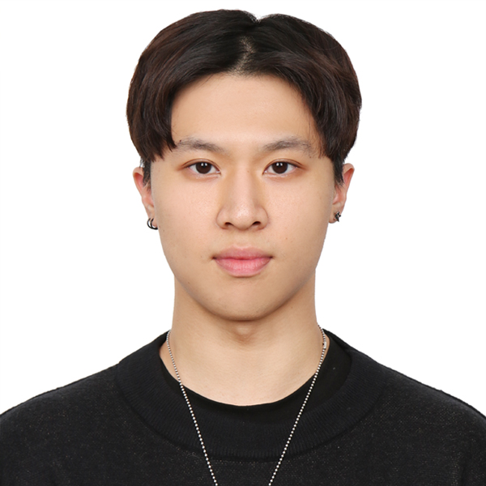

Tsung-Han Lin (林宗翰）
Multimodal Learning, Vision-Language
I am an AI researcher at MSLab @ NTU. I recieved B.S. degree at UCLA majoring in Mathematics of Computation. My primary interest lies in multimodal learning, particularly exploring scalable architectures and frameworks that bridge vision and language. I am especially curious about how different modalities can align effectively to improve complex reasoning tasks and produce more robust, context-aware outputs. Feel free to contact me if you share similar interests.